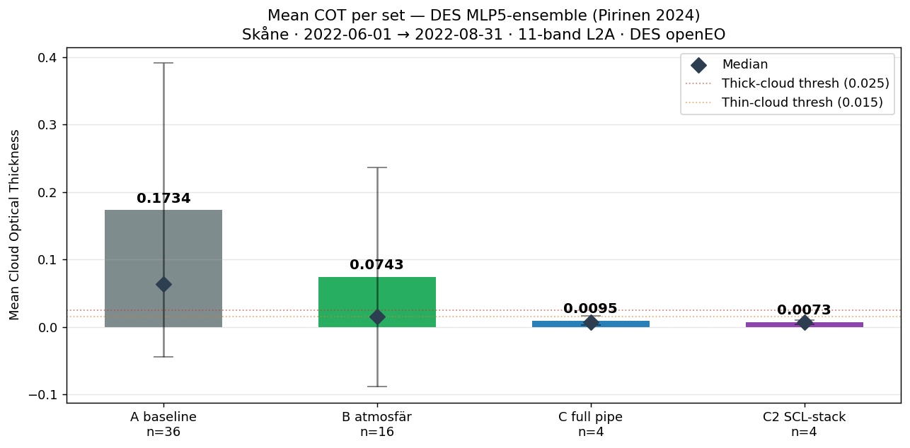
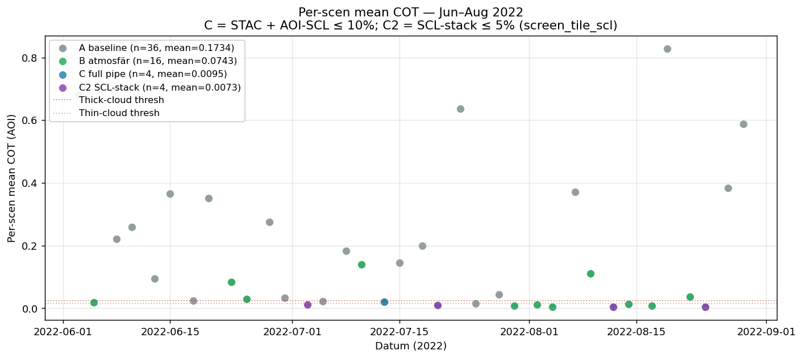
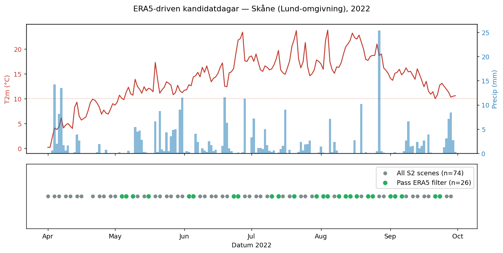
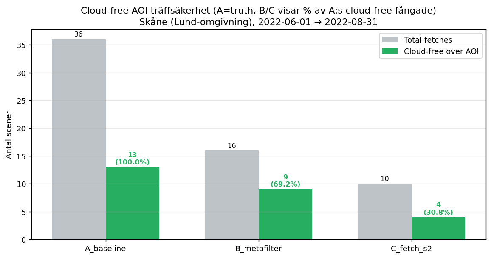

“IMINT Engine fungerar som en lättillgänglig ingång och ett värdefullt stöd för många inom miljöövervakning – även för den som inte är specialist eller ännu inte helt har definierat sitt behov. Genom att utgå från välkända geografiska områden, som den egna kommunen, och olika verksamhetsfält som marin miljö eller jordbruk, kan användaren enkelt navigera till relevanta delar av plattformen. Där går det att identifiera mönster och insikter som svarar mot det egna behovet.
IMINT Engine är baserad på data från Digital Earth Sweden, vilket säkerställer tillgång till aktuell och tillförlitlig miljöinformation. Genom att samla och visualisera denna data på ett överskådligt sätt blir plattformen inte bara en informationskälla, utan också ett verktyg som vägleder användaren i att förstå, formulera och besvara sina frågor.”
— Ian Brown, Docent i jordobservation, Institutionen för naturgeografi, Stockholms universitet
Showcase — Brand (2018-07-24) · Marin (2025-07-10 / 2025-07-19) · Betesmark (2025-06-14) · Kust (Kustlinje + Vegetationskant)
Sentinel-2 är en konstellation av två satelliter (2A och 2B) som drivs av Europeiska rymdorganisationen (ESA) inom Copernicus-programmet. Satelliterna kretsar i en solsynkron bana på 786 km höjd och avbildar hela jorden var femte dag med en upplösning på 10 meter per pixel för de synliga banden. RGB-bilden visar området som det ser ut för ögat, med band 4 (rött), band 3 (grönt) och band 2 (blått). De bruna och grå områdena är brandskadat landskap där vegetationen har förstörts.
Källa: ESA Sentinel-2
NMD (Nationellt Marktäckedata) är Sveriges rikstäckande kartläggning av marktäcke och markanvändning, producerad av Naturvårdsverket. Datat har 10 meters upplösning och klassificerar marken i över 25 kategorier — från tallskog och granskog till åkermark, bebyggelse och vatten. I brandanalysen används NMD för att korsreferera vilka naturtyper som drabbats hårdast: diagrammet visar hur stor andel av varje markklass som ligger inom det brandpåverkade området. Detta ger viktig kontext för ekologisk bedömning och återställningsplanering.
Källa: Naturvårdsverket, "Nationellt Marktäckedata (NMD)." naturvardsverket.se
dNBR (differentierat Normalized Burn Ratio) är standardmetoden för att kvantifiera hur allvarligt en brand har skadat vegetationen. Först beräknas NBR-indexet som (NIR − SWIR) / (NIR + SWIR) med band B08 och B12 både för ett datum före branden (baslinje) och för branddatumet. Sedan tas differensen: dNBR = NBRföre − NBRefter. Höga positiva värden (röda på kartan) innebär hög brandsvårighetsgrad där träd och markvegetation har förstörts, medan värden nära noll (gult/grönt) visar obrända eller lätt påverkade områden. Klassificeringen följer USGS standard med sju klasser från hög återväxt till hög svårighetsgrad.
Källa: Key, C.H. & Benson, N.C., 2006. "Landscape Assessment: Ground measure of severity." USGS FIREMON, LA1-LA51.
Förändringsgradientkartan visar hur mycket varje pixel har förändrats jämfört med en molnfri baslinjebild från före branden. Analysen använder sex Sentinel-2-band (B02, B03, B04, B08, B11, B12) — alltså synligt ljus, nära infrarött och kortvågigt infrarött — och beräknar den euklidiska normen av skillnaden mellan de två datumen. Baslinjejustering sker med IMINT Engines koregistreringsmodul som korrigerar både heltals- och subpixelförskjutningar mellan olika satellitöverfarter. Resultatet visas som en värmekarta där mörka områden är oförändrade och ljusa/heta områden visar störst förändring.
NDVI (Normalized Difference Vegetation Index) är det mest använda vegetationsindexet inom fjärranalys. Det beräknas som (NIR − Röd) / (NIR + Röd) där NIR är det nära infraröda bandet (B08) och Röd är det synliga röda bandet (B04). Frisk vegetation reflekterar starkt i NIR och absorberar rött ljus, vilket ger höga NDVI-värden (0.3–0.9). Brandskadat eller vegetationslöst område ger låga värden nära noll. På kartan visas högt NDVI i grönt (frisk skog) och lågt i rött/gult (skadad mark).
Källa: Rouse et al., 1974. "Monitoring vegetation systems in the Great Plains with ERTS." Third Earth Resources Technology Satellite-1 Symposium, NASA SP-351.
NDWI (Normalized Difference Water Index) mäter förekomsten av vatten och fuktighet i landskapet. Det beräknas som (Grön − NIR) / (Grön + NIR) med band B03 och B08. Positiva värden (blått på kartan) indikerar öppet vatten, medan negativa värden visar torr mark. Sjöar och vattendrag syns tydligt som blå områden. Indexet är användbart för att identifiera hur en brand påverkat markfuktigheten och vattenbalansen i området.
Källa: McFeeters, S.K., 1996. "The use of the Normalized Difference Water Index (NDWI) in the delineation of open water features." Int. J. Remote Sensing, 17(7).
EVI (Enhanced Vegetation Index) är ett vidareutvecklat vegetationsindex som korrigerar för atmosfäriska störningar och markens bakgrundsreflektion. Till skillnad från NDVI mättas inte EVI lika lätt i områden med tät vegetation, vilket ger mer nyanserad information i frodiga skogsområden. EVI använder tre band — blått (B02), rött (B04) och NIR (B08) — för att skatta vegetationens tillstånd mer robust än NDVI ensamt.
Källa: Huete et al., 2002. "Overview of the radiometric and biophysical performance of the MODIS vegetation indices." Remote Sensing of Environment, 83(1-2).
COT (Cloud Optical Thickness) anger hur optiskt tjockt molntäcket är över analysområdet. Värden nära noll (ljusgult) innebär klar himmel och tillförlitliga satellitdata, medan högre värden (orange till rött) visar molniga områden där underliggande mark eller hav inte kan ses. Modellen är en ensemble av fem MLP5-nätverk (fem lager djupa neurala nät) som tränats på syntetiska molndata från SMHI. Varje nätverk tar emot 11 Sentinel-2-band (B02–B12, exklusive B01 och B10) och predikterar ett kontinuerligt COT-värde per pixel. Genom att använda medelvärdet av alla fem modellers prediktioner fås ett robust och brusreducerat resultat. Molnanalysen används här för att säkerställa att det valda datumet har tillräckligt molnfria förhållanden för en pålitlig analys.
Källa: Pirinen, A. et al., 2024. "Creating and Leveraging a Synthetic Dataset of Cloud Optical Thickness Measures for Cloud Detection in MSI." Remote Sensing. GitHub
Sentinel-2 är en konstellation av två satelliter (2A och 2B) som drivs av Europeiska rymdorganisationen (ESA) inom Copernicus-programmet. Satelliterna kretsar i en solsynkron bana på 786 km höjd och avbildar hela jorden var femte dag med en upplösning på 10 meter per pixel för de synliga banden. RGB-bilden visar området som det ser ut för ögat, med band 4 (rött), band 3 (grönt) och band 2 (blått). I kustmiljön syns land, öar, holmar och öppet vatten — och vid god sikt kan enskilda båtar och deras kölvatten urskiljas i bilden.
Källa: ESA Sentinel-2
Båtdetekteringen använder YOLO11s (You Only Look Once, version 11 small), en modern AI-modell för objektdetektering i realtid. YOLO-arkitekturen bygger på ett djupt konvolutionellt neuralt nätverk (CNN) som analyserar hela bilden i ett enda steg — till skillnad från äldre metoder som först föreslår kandidatområden och sedan klassificerar dem separat. Modellen har tränats på satellitbilder av båtar och delar in bilden i ett rutnät där varje cell förutsäger bounding boxes (rektanglar) och sannolikheter för att en båt finns. Överlappande detektioner filtreras med Non-Maximum Suppression (NMS). En NMD-baserad landmask säkerställer att enbart detektioner på vatten behålls, vilket eliminerar falsklarm på land. Varje detekterad båt markeras med en cyan-färgad ruta i bilden.
Källa: Jocher, G. et al., 2024. "Ultralytics YOLO11." docs.ultralytics.com; Redmon, J. et al., 2016. "You Only Look Once: Unified, Real-Time Object Detection." CVPR 2016.
Heatmap-analysen aggregerar båtdetektioner från flera satellitöverfarter under en tidsperiod till en enda värmekarta som visar var båtar förekommer oftast. För varje molnfritt tillfälle körs YOLO-detektorn och resultaten ackumuleras i ett rutnät där varje cells intensitet ökar för varje detekterad båt. Områden med återkommande trafik — som farleder, hamninlopp och ankringsplatser — får höga värden (röda), medan enstaka passeringar ger lägre intensitet (gult). Bilder med för hög molntäckning filtreras automatiskt bort genom COT-analys för att undvika falsklarm. Resultatet ger en överblick av det maritima rörelsemönstret som enstaka ögonblicksbilder inte kan visa.
NMD (Nationellt Marktäckedata) är Sveriges rikstäckande kartläggning av marktäcke och markanvändning, producerad av Naturvårdsverket. Datat har 10 meters upplösning och klassificerar marken i över 25 kategorier — från tallskog och granskog till åkermark, bebyggelse och vatten. I den marina analysen fyller NMD en dubbel funktion: dels som bakgrundsinformation som visar vilka landtyper som finns längs kusten, dels som landmask för båtdetekteringen. Genom att identifiera vilka pixlar som är land respektive vatten kan analyskedjan filtrera bort falsklarm på land och begränsa detektionerna till sjö- och havsområden.
Källa: Naturvårdsverket, "Nationellt Marktäckedata (NMD)." naturvardsverket.se
NDVI (Normalized Difference Vegetation Index) är det mest använda vegetationsindexet inom fjärranalys. Det beräknas som (NIR − Röd) / (NIR + Röd) där NIR är det nära infraröda bandet (B08) och Röd är det synliga röda bandet (B04). Frisk vegetation reflekterar starkt i NIR och absorberar rött ljus, vilket ger höga NDVI-värden (0.3–0.9). Vatten och bar mark ger värden nära eller under noll. I kustanalysen används NDVI för att skilja vegetationsklädda öar och strandremsor från kala klippor, vatten och bebyggelse — och för att bedöma kustvegetationens hälsotillstånd.
Källa: Rouse et al., 1974. "Monitoring vegetation systems in the Great Plains with ERTS." Third Earth Resources Technology Satellite-1 Symposium, NASA SP-351.
NDWI (Normalized Difference Water Index) mäter förekomsten av vatten och fuktighet i landskapet. Det beräknas som (Grön − NIR) / (Grön + NIR) med band B03 och B08. Positiva värden (blått på kartan) indikerar öppet vatten, medan negativa värden visar torr mark. I den marina analysen ger NDWI en tydlig bild av gränsen mellan land och vatten samt hjälper till att identifiera grunda vattenområden, inlopp och vikar. Indexet kompletterar NMD-landmasken genom att visa vattenytor med högre detaljeringsgrad.
Källa: McFeeters, S.K., 1996. "The use of the Normalized Difference Water Index (NDWI) in the delineation of open water features." Int. J. Remote Sensing, 17(7).
COT (Cloud Optical Thickness) anger hur optiskt tjockt molntäcket är över analysområdet. Värden nära noll (ljusgult) innebär klar himmel och tillförlitliga satellitdata, medan högre värden (orange till rött) visar molniga områden där underliggande mark eller hav inte kan ses. Modellen är en ensemble av fem MLP5-nätverk (fem lager djupa neurala nät) som tränats på syntetiska molndata från SMHI. Varje nätverk tar emot 11 Sentinel-2-band (B02–B12, exklusive B01 och B10) och predikterar ett kontinuerligt COT-värde per pixel. Genom att använda medelvärdet av alla fem modellers prediktioner fås ett robust och brusreducerat resultat. Molnanalysen är särskilt viktig i den marina kedjan: om ett datum har för hög molntäckning exkluderas det automatiskt från heatmap-ackumuleringen för att undvika att moln feldetekteras som båtar.
Källa: Pirinen, A. et al., 2024. "Creating and Leveraging a Synthetic Dataset of Cloud Optical Thickness Measures for Cloud Detection in MSI." Remote Sensing. GitHub
Sentinel-2 RGB visar Öresunds smalaste punkt mellan Helsingborg och Helsingör — ett av världens mest trafikerade sund. Här passerar dagligen lastfartyg, tankers, containerfartyg och HH Ferries passagerarfärjor över den 4 km breda sunden. Vid 10 meters upplösning kan enskilda fartyg och deras kölvatten urskiljas.
Källa: ESA Sentinel-2
YOLO11s (You Only Look Once, version 11 small) detekterar fartyg i ett enda steg genom ett djupt CNN som analyserar hela bilden simultant. En NMD-baserad landmask säkerställer att enbart detektioner på vatten behålls. Varje detekterat fartyg markeras med en cyan-färgad ruta. I sundet detekterades 54 fartyg.
Källa: Jocher, G. et al., 2024. "Ultralytics YOLO11." docs.ultralytics.com
Allen AI:s rslearn-modell använder en Swin Transformer V2 Base backbone (förtränad via SatlasPretrain på Sentinel-2) kopplad till en Faster R-CNN detektionshuvud. Utöver bounding-box-detektering predikterar modellen fartygsattribut: typ (cargo, tanker, passenger, etc.), hastighet (knop), kurs (grader) och längd (meter). Attributen visas som klickbara popups i vektoröverlagringen. Färgkodningen baseras på hastighet: blå = stationär, gul = låg fart, orange = medelfart, röd = hög fart. I sundet detekterades 20 fartyg med attribut.
Källa: Bastani, F. et al., 2024. "SatlasPretrain: A Large-Scale Dataset for Remote Sensing Image Understanding." ICLR 2024. github.com/allenai/rslearn (Apache 2.0)
Heatmap-analyserna aggregerar fartygsdetektioner från flera satellitöverfarter (juli 2025) till värmekartor. Både YOLO- och AI2-modellen körs separat för varje molnfritt datum, och resultaten ackumuleras med Gaussisk utslätning. Farleder, hamninlopp och ankringsplatser framträder som intensiva zoner.
Samma spektrala index och stöddatalager som i den marina Bohuslän-analysen. Öresund ligger delvis utanför NMD:s täckningsområde (dansk sida, 65% oklassificerat). Den svenska sidan visar Helsingborg med bebyggelse, infrastruktur och hav. NDVI och NDWI ger spektrala karakteristiker av vattenytan, och COT verifierar molnfria förhållanden (94.7% klart).
Sentinel-2 är en konstellation av två satelliter (2A och 2B) som drivs av Europeiska rymdorganisationen (ESA) inom Copernicus-programmet. Satelliterna kretsar i en solsynkron bana på 786 km höjd och avbildar hela jorden var femte dag med en upplösning på 10 meter per pixel för de synliga banden. RGB-bilden visar området som det ser ut för ögat, med band 4 (rött), band 3 (grönt) och band 2 (blått). I betesmarksanalysen visar RGB-bilden jordbrukslandskapet i Skåne med blandning av åkermark, beteshagar och skogspartier. De gröna fälten i maj indikerar aktiv betessäsong.
Källa: ESA Sentinel-2
LPIS (Land Parcel Identification System) är Jordbruksverkets databas över alla jordbruksblock i Sverige. Polygonerna hämtas i realtid via Jordbruksverkets öppna WFS-tjänst och filtreras på ägoslag = “Bete” för att visa enbart betesmark. Datan uppdateras årligen och innehåller ~252 000 betesblock över hela Sverige. Varje block har ett unikt block-ID, areal, region och stödkategori. Koordinatsystemet är EPSG:3006 (SWEREF99 TM) — samma som vår NMD-grid, vilket ger exakt pixeljustering utan omprojicering.
Källa: Jordbruksverket, Öppna data, CC BY 4.0. jordbruksverket.se/oppna-data
NDVI (Normalized Difference Vegetation Index) är det mest använda vegetationsindexet inom fjärranalys. Det beräknas som (NIR − Röd) / (NIR + Röd) där NIR är det nära infraröda bandet (B08) och Röd är det synliga röda bandet (B04). Frisk vegetation reflekterar starkt i NIR och absorberar rött ljus, vilket ger höga NDVI-värden (0.3–0.9). I betesmarksanalysen är NDVI centralt för att bedöma betesmarkens vitalitet. Aktivt betade marker visar typiskt NDVI 0.4–0.7, medan obetade gräsmarker ofta når 0.7–0.9. Genom att jämföra NDVI-värden inuti och utanför LPIS-polygonerna kan betestrycket uppskattas.
Källa: Rouse et al., 1974. "Monitoring vegetation systems in the Great Plains with ERTS." Third Earth Resources Technology Satellite-1 Symposium, NASA SP-351.
NDWI (Normalized Difference Water Index) mäter förekomsten av vatten och fuktighet i landskapet. Det beräknas som (Grön − NIR) / (Grön + NIR) med band B03 och B08. Positiva värden (blått på kartan) indikerar öppet vatten, medan negativa värden visar torr mark. I beteslandskapet ger NDWI information om markfuktigheten, vilket är avgörande för beteskvalitet. Våta betesmarker kan indikera dräneringsproblem eller naturliga våtmarker inom blockgränserna.
Källa: McFeeters, S.K., 1996. "The use of the Normalized Difference Water Index (NDWI) in the delineation of open water features." Int. J. Remote Sensing, 17(7).
EVI (Enhanced Vegetation Index) är ett vidareutvecklat vegetationsindex som korrigerar för atmosfäriska störningar och markens bakgrundsreflektion. Till skillnad från NDVI mättas inte EVI lika lätt i områden med tät vegetation, vilket ger mer nyanserad information i frodiga skogsområden. EVI använder tre band — blått (B02), rött (B04) och NIR (B08) — för att skatta vegetationens tillstånd mer robust än NDVI ensamt. EVI ger en bättre bild av betesmarkens biomassa än NDVI i frodiga områden. Eftersom EVI inte mättas vid hög vegetationstäthet kan det skilja på nyligen betade hagar (lägre EVI) och obetade fält (högre EVI).
Källa: Huete et al., 2002. "Overview of the radiometric and biophysical performance of the MODIS vegetation indices." Remote Sensing of Environment, 83(1-2).
COT (Cloud Optical Thickness) anger hur optiskt tjockt molntäcket är över analysområdet. Värden nära noll (ljusgult) innebär klar himmel och tillförlitliga satellitdata, medan högre värden (orange till rött) visar molniga områden där underliggande mark eller hav inte kan ses. Modellen är en ensemble av fem MLP5-nätverk (fem lager djupa neurala nät) som tränats på syntetiska molndata från SMHI. Varje nätverk tar emot 11 Sentinel-2-band (B02–B12, exklusive B01 och B10) och predikterar ett kontinuerligt COT-värde per pixel. Genom att använda medelvärdet av alla fem modellers prediktioner fås ett robust och brusreducerat resultat. I betesmarksanalysen används COT för att verifiera att de analyserade Sentinel-2-scenerna är molnfria. Pixlar med COT > 0.015 maskeras automatiskt före beräkning av vegetationsindex.
Källa: Pirinen, A. et al., 2024. "Creating and Leveraging a Synthetic Dataset of Cloud Optical Thickness Measures for Cloud Detection in MSI." Remote Sensing. GitHub
NMD (Nationellt Marktäckedata) är Sveriges rikstäckande kartläggning av marktäcke och markanvändning, producerad av Naturvårdsverket. Datat har 10 meters upplösning och klassificerar marken i över 25 kategorier — från tallskog och granskog till åkermark, bebyggelse och vatten. I betesmarksanalysen korsrefereras NMD med LPIS-polygonerna för att verifiera vilka markklasser som faktiskt ligger inom de registrerade betesblockens gränser. Detta avslöjar t.ex. om ett betesblock innehåller skog, våtmark eller åkermark utöver den förväntade gräsmarken.
Källa: Naturvårdsverket, "Nationellt Marktäckedata (NMD)." naturvardsverket.se
IMINT Engines betesmarkspipeline hämtar automatiskt alla molnfria Sentinel-2-scener under betessäsongen (april–oktober) för varje LPIS-polygon. För varje tidssnitt hämtas alla 12 spektralband (B01–B12 exkl. B10) och en SCL-baserad molnmask. Tidssnitt med ≥1% moln inom polygonen filtreras bort. Alla kvarstående datum co-registreras geometriskt mot ett referensdatum med sub-pixel Fourier-faskorrelation för att säkerställa perfekt pixeljustering mellan tidssnitt. Resultatet är en (T, 12, H, W)-tensor redo för CNN-LSTM-klassificering av betesaktivitet.
Pirinen, A. et al., 2024. “Detecting Grazing Activity from Satellite Time Series Data.” arXiv:2510.14493
För varje LPIS-betespolygon klassificeras den multitemporala Sentinel-2-tidsserien som aktiv betesmark eller ingen aktivitet. Modellen är en CNN-biLSTM från RISE Research Institutes of Sweden: ett CNN-block (Conv2d → ReLU → MaxPool2d) extraherar rumsliga features per tidssnitt, sedan bearbetas tidsserien av en bidirektionell LSTM (hidden_dim=8). För slutprediktionen tas medianen av de sista 4 tidsstegen, vilket ger robust klassificering. Indata: 12 band × 46×46 px (center crop) × T tidssteg. Modellen är förtränad på LPIS-polygoner i Sverige med data från Jordbruksverket. MIT-licens.
Pirinen, A. et al., 2024. “Detecting Grazing Activity from Satellite Time Series Data.” github.com/aleksispi/pib-ml-grazing (MIT)
Sentinel-2 är en konstellation av två satelliter (2A och 2B) som drivs av Europeiska rymdorganisationen (ESA) inom Copernicus-programmet. RGB-bilden visar kustområdet utanför Ystad som det ser ut för ögat.
Källa: ESA Sentinel-2
Strandlinjens position extraheras automatiskt från Sentinel-2-bilder med CoastSat-metoden. NDWI/MNDWI-index beräknas och Otsu-tröskling används för att separera land från vatten. Genom att jämföra strandlinjer från 2018 till 2025 kan erosion och ackumulation identifieras längs kuststräckan.
Källa: Vos, K. et al., 2019. "CoastSat: A Google Earth Engine-enabled Python toolkit to extract shorelines from publicly available satellite imagery." Environmental Modelling & Software. github.com/kvos/CoastSat
NDVI (Normalized Difference Vegetation Index) beräknas som (NIR - Röd) / (NIR + Röd). I kustanalysen visar NDVI vegetationens tillstånd i strandzonen och bakomliggande landskap.
Källa: Rouse et al., 1974. "Monitoring vegetation systems in the Great Plains with ERTS."
NDWI (Normalized Difference Water Index) är centralt för kustlinjeanalysen. Det beräknas som (Grön - NIR) / (Grön + NIR) och används för att separera land från vatten vid strandlinjeextraktion.
Källa: McFeeters, S.K., 1996. "The use of the Normalized Difference Water Index (NDWI) in the delineation of open water features." Int. J. Remote Sensing, 17(7).
EVI (Enhanced Vegetation Index) korrigerar för atmosfäriska störningar och ger mer nyanserad information i kustzonens vegetation.
Källa: Huete et al., 2002. "Overview of the radiometric and biophysical performance of the MODIS vegetation indices." Remote Sensing of Environment, 83(1-2).
COT (Cloud Optical Thickness) anger hur optiskt tjockt molntäcket är. Värden nära noll innebär klar himmel och tillförlitliga satellitdata.
Källa: Pirinen, A. et al., 2024. "Creating and Leveraging a Synthetic Dataset of Cloud Optical Thickness Measures for Cloud Detection in MSI." Remote Sensing. GitHub
Två metoder för kustsegmentering visas sida vid sida för jämförelse:
Indexbaserad (NDWI/MNDWI + Otsu): Använder spektrala vattenindex (NDWI och MNDWI) med automatisk Otsu-tröskling för att skilja vatten från land. Metoden är transparent, fysikbaserad och kräver ingen GPU. Den identifierar fyra klasser: djupt vatten, grunt vatten, sediment och land.
Källa: Vos, K. et al., 2019. "CoastSat: A Google Earth Engine-enabled Python toolkit to extract shorelines." Environmental Modelling & Software.
CoastSeg SegFormer (neuralt nätverk): En SegFormer-B0 transformer-modell (3,7 M parametrar) tränad på märkt satellitdata för kustsegmentering. Modellen lär sig komplexa spatiala mönster direkt från RGB-bilddata och producerar samma fyra klasser. Jämför de två metodernas resultat för att se var de överensstämmer och var de skiljer sig — särskilt vid komplexa kustlinjer med sediment och grunt vatten.
Källa: Vos, K. et al., CoastSeg — GitHub
Sentinel-2 RGB visar Vänerns södra strand nära Lidköping/Läckö. Området har en blandning av skog, jordbruksmark och strandvegetation som möter sjöns strandlinje — ett idealiskt testområde för vegetationskantdetektion.
Källa: ESA Sentinel-2
NDVI (Normalized Difference Vegetation Index) beräknas som (NIR − Röd) / (NIR + Röd) med band B08 och B04. I vegetationskantanalysen är NDVI det centrala indexet: gränsen mellan vegetation och icke-vegetation bestäms genom tröskling av NDVI-värden. Frisk vegetation ger höga NDVI-värden (0.3–0.9) medan vatten och bar mark ger låga värden. Den exakta tröskeln avgör var vegetationskanten placeras.
Källa: Rouse et al., 1974. "Monitoring vegetation systems in the Great Plains with ERTS."
Vegetationen klassificeras i tre klasser med NDVI-tröskling: vatten (blått), icke-vegeterat (beige) och vegeterat (grönt). Tröskeln bestäms automatiskt med Otsu-metoden eller VedgeSats Weighted Peaks-algoritm. Morfologisk rensning (close + open) appliceras för att ta bort brus och småfragment.
Källa: Muir, F.M.E. et al., 2024. "VedgeSat: An automated, open-source toolkit for coastal change monitoring using satellite-derived vegetation edges." Earth Surf. Process. Landf., 49, 2405–2423.
Vegetationskanten extraheras som en 1-pixel-bred centerlinje längs gränsen mellan vegeterat och icke-vegeterat område. Metoden använder morfologisk gradient för att hitta kantbandet (~3 px brett) och sedan skeletonisering för att reducera till en enda pixel. Resultatet är en vektoriserad linje som representerar vegetationens yttre gräns mot strand, vatten eller bar mark. Genom att jämföra vegetationskanter från 2018 till 2025 kan förändringar i vegetationstäckning identifieras — både erosion av vegetation och nyetablering.
Källa: Nugraha, I. et al., 2026. "Extending a scalable satellite-based vegetation edge detection framework to diverse tropical coasts." Front. Mar. Sci., 13, 1757991.
Vegetationskantens position jämförs år för år från 2018 till 2025. Varje års kant visas med en färggradient från gult (äldst) till rött (nyast). Förflyttningar av vegetationskanten indikerar förändringar i strandvegetationens utbredning — antingen tillbakadragning (erosion, röjning) eller framryckning (ackumulation, nyetablering). Denna metod ger en kostnadseffektiv och skalbar övervakning av kustzonens vegetation utan behov av fältundersökningar.
Stabilitetskartorna visar hur mycket varje pixel har förändrats spektralt mellan 2018 och efterföljande år. Analysen använder samma metod som branddetekteringen: den euklidiska normen beräknas över sex Sentinel-2-band (B02, B03, B04, B08, B11, B12) — synligt ljus, nära infrarött och kortvågigt infrarött. Medelvärdet av alla års förändringsmagnituder ger en stabilitetskarta där mörka områden är spektralt stabila (oförändrad vegetation) och ljusa/heta områden har genomgått störst förändring. Max-kartan visar den största förändringen som observerats under någon enskild jämförelse. Tillsammans kompletterar dessa den NDVI-baserade vegetationskantanalysen med en bredare spektral bild av landskapsförändringen.
Sentinel-2 RGB visar Bohuslänkusten med Stigfjorden mellan Tjörn och Orust, vattnen utanför Mollösund och Käringön, samt en del av öppen Skagerrak. Vårblomningens klorofyllstrimmor syns tydligt som ljusare gröna virvlar i vattnet — april-bloomen domineras av kiselalger (diatoméer), främst Skeletonema costatum och Chaetoceros-arter. Bilden är komponerad från B04 (röd, 665 nm), B03 (grön, 560 nm), och B02 (blå, 490 nm) med 2:a/98:e-percentil-stretch för synlig kontrast.
Källa: ESA Sentinel-2 · Inspirationsbild: digitalearth.se 2026-04-08 · Bloom-fenologi: SMHI BAWS
Alla retrievals i denna analys kommer från en enda Sentinel-2-passage: S2B kl 10:30:19 UTC den 8 april 2026. Vi blandar inte data från olika dagar eller från S2A:s parallella passage 10 minuter senare (10:40:41 UTC). Anledningen är att klorofyllblomningsdynamik kan röra sig flera kilometer per timme i ytvatten — att mosaika över olika tidpunkter introducerar artefakter som ser ut som verkliga gradienter. Däremot mosaikar vi inom samma passage två angränsande MGRS-rutor (T32VPK + T33VUE, båda S2B 10:30:19) eftersom det är samma fysiska observation, bara delad mellan UTM-zon 32 och 33.
Disciplin etablerad i denna analys 2026-04-28; detaljer i SPEC.md.
NDCI = (B05 − B04) / (B05 + B04). Klassiskt rödedge/röd-kontrastindex som ökar med klorofyll-a-absorption vid 665 nm relativt rödedge-reflektansen vid 705 nm. B05 (705 nm) är det första rödedge-bandet på Sentinel-2 och fångar reflektanstoppen som blir högre vid förhöjt klorofyll. Robust för öppna kustvatten, tolerant mot atmosfäriska variationer. Värden nära noll i klart vatten, positiva värden upp mot ~0.6 indikerar förhöjt klorofyll. Beräknas på L2A ytreflektans (Sen2Cor) och färgskalan i vår dashboard är fast: −0.2 (klart vatten) → +0.6 (kraftig blomning).
Källa: Mishra, S. & Mishra, D.R., 2012. "Normalized difference chlorophyll index: A novel model for remote estimation of chlorophyll-a concentration in turbid productive waters." Remote Sensing of Environment 117: 394–406.
MCI = B05 − B04 − 0.389·(B06 − B04). Mäter höjden på 705 nm-reflektanstoppen över en linjär baslinje dragen från B04 (665 nm) till B06 (740 nm). Originellt designad för MERIS:s 709 nm-band av Gower et al. (2005); porterad till Sentinel-2 av Binding et al. (2013) med koefficienten 0.389 anpassad för MSI-bandcentra. Kompletterar NDCI: MCI är mer känslig för måttligt höga klorofyllhalter (5–25 mg/m³) där NDCI börjar mätta. Färgskalan i dashboarden är fast: −0.02 (klart) → +0.08 (blomning).
Källa: Gower, J., King, S., Borstad, G. & Brown, L., 2005. "Detection of intense plankton blooms using the 709 nm band of the MERIS imaging spectrometer." Int. J. Remote Sensing 26: 2005–2012. Sentinel-2-anpassning: Binding et al., 2013.
Förtränat neuralt nätverk från NASA/USGS Pahlevan-gruppen som returnerar klorofyll-a (mg/m³) direkt i fysikaliska enheter genom inversion av Rrs-spektrumet. Tränat globalt på SeaBASS in-situ-matchups och designat speciellt för Sentinel-2 i optiskt komplext (Case-2) kustvatten. MSI-modellen använder 7 band: B01 (443 nm, kustaerosol), B02 (490), B03 (560), B04 (665), B05 (705), B06 (740), B07 (783). I denna analys kör vi modellen via upstream-paketet BrandonSmithJ/MDN (TensorFlow 2.13/Keras 2.13) på de L2A ytreflektansvärden som DES levererar (efter division med π för att gå från ρ till Rrs). Färgskalan är fast på 0.5–25 mg/m³ (log10-skala) så att samma färg betyder samma koncentration över olika scener — legenden visar 5 fasta nivåer (Låg / Måttlig / Förhöjd / Blomning / Hög blomning).
Källa: Pahlevan, N. et al., 2020. "Seamless retrievals of chlorophyll-a from Sentinel-2 (MSI) and Sentinel-3 (OLCI) in inland and coastal waters." Remote Sensing of Environment 240: 111604. Implementation: github.com/BrandonSmithJ/MDN
ESA:s neurala nätverk för optiskt komplexa vatten (Case-2). Inverserar inneboende optiska egenskaper (IOPs) ur water-leaving reflectance: iop_apig (klorofyllpigmentabsorption vid 443 nm, m⁻¹), iop_agelb (gelbstoff/CDOM-absorption, m⁻¹), iop_bpart + iop_bwit (partikel- och vit-partikelspridning). Klorofyll-a beräknas via Brockmanns standardrelation chl = iop_apig1.04 · 21.0; TSM via tsm = 1.72·iop_bpart + 3.1·iop_bwit; CDOM rapporteras direkt som iop_agelb. Vi kör c2rcc.msi-operatorn via SNAP 13 i en custom-byggd Docker-image (FROM eclipse-temurin:11-jdk + ESA:s officiella Linux-installer + S2-toolbox + s3tbx.c2rcc-plugin) direkt på L1C TOA-data som hämtas som SAFE-arkiv från Google Clouds publika Sentinel-2-bucket (anonym, gratis, full SAFE-arkitektur). SNAP-grafen är Read → Resample(referenceBand=B2) → Subset(2 km buffrad WGS84-polygon) → c2rcc.msi → Write(BEAM-DIMAP).
Vi använder netSet=C2X-Nets (Case-2 eXtreme) i stället för default C2RCC-Nets eftersom Bohusläns vatten har betydligt högre CDOM/gelbstoffhalter än vad default-NN är tränad för. Default-NN klampar då alla pixlar utanför sin träningsrange till en konstant "NN-floor"-output (apig = 0.000298 m⁻¹), vilket ger 65 % land + 19 % NN-floor + 16 % riktiga retrievals. Med C2X-Nets blir fördelningen 59 % land + 1.8 % NN-floor + 38.8 % riktiga retrievals — 2.5× fler giltiga pixlar och 10× lägre falsk-positiv-andel. Vi filtrerar också manuellt bort pixlar med iop_apig < 0.001 (NN-floor-rest) som NaN.
Källa: Brockmann, C. et al., 2016. "Evolution of the C2RCC Neural Network for Sentinel 2 and 3 for the Retrieval of Ocean Colour Products in Normal and Extreme Optically Complex Waters." ESA Living Planet Symposium. SNAP: step.esa.int
Skillnadskartan visar std(log10(MDN_chl), log10(C2RCC_chl)) per pixel (begränsad till pixlar där båda metoder gett valid retrieval). Höga värden = metoderna är oense; låga värden = de pekar på samma koncentration. Spridning > 0.7 (≈ 5× faktorskillnad) indikerar att lokala vattentypsförhållanden ligger på kanten av minst en av metodernas träningsrange — typiskt vid fjordmynningar (där MDN ser sediment som klorofyll) eller vid mycket klart vatten (där C2X-Nets är osäker). Färgskalan: 0 (perfekt enighet) → 2.0 (100× faktorskillnad).
Optisk satellitfjärranalys över grunt vatten (< ~5 m djup) lider av bottenreflektansinterferens: ljus reflekterat från sandbottnar, sjögräs eller hällar når sensorn och blandas med vattenleaving-signalen. Både MDN och NDCI/MCI tolkar då bright-bottom-pixlar som klorofyllrika när de i själva verket är optiskt grunda. I denna analys flaggar vi pixlar närmare än 50 m till strand (via scipy.ndimage.distance_transform_edt på vattenmasken) och med klorofyll > 5 mg/m³ som bottenpåverkade — de NaN-maskeras i alla chl-paneler. Empiriskt: 96.7 % av pixlarna som skulle klassats "Hög blomning" innan filtret låg närmare än 100 m strand, vs 25 % förväntat om blomningar var rumsligt jämnt fördelade.
För riktig 5 m-isobath skulle vi behöva sjökortsdata (S-57 DEPARE) eller EMODnet bathymetri — distance-to-shore är en pragmatisk approximation tills den infrastrukturen är på plats.
Sentinel-2:s Scene Classification Layer (SCL, 20 m native, näst-grannresampling till 10 m) används som primär vattenmask: klass 6 = öppet vatten, klass 7 = oklassificerat (kan vara grunt vatten). Moln (klass 8/9), cirrus (10) och molnskuggor (3) exkluderas. Vid avsaknad av SCL faller masken tillbaka på MNDWI = (B03 − B11) / (B03 + B11) > 0 enligt Xu (2006). AOI-maskeringen i analyzern använder envelop (axis-aligned bbox) av den projicerade polygonen i data-CRS — INTE polygonen själv — för att matcha det _to_nmd_grid begär från DES openEO. Att använda polygonen direkt skulle NaN-clippa hörnwedges som fetchen redan korrekt levererat, eftersom en WGS84-rektangel projiceras till ett parallellogram i SWEREF99 TM (3°-tilt p.g.a. att lat/lon-meridianer inte är parallella med projektionsgridden).
L2A-sidan (NDCI / MCI / MDN / RGB / vattenmask):
DES openEO levererar L2A ytreflektans (Sen2Cor) i EPSG:3006 NMD 10 m-grid med temporal_extent snävt satt så att bara S2B 10:30:19-passet ingår (annars mosaikar DES servern över bägge dagliga passar). Hämtas via imint.fetch.fetch_des_data() med vår patchade _unpack_openeo_gtiff_bytes-helper som hanterar DES gzip+tar-svar.
L1C-sidan (C2RCC):
SAFE-arkiven (T32VPK + T33VUE, båda S2B 10:30:19) hämtas från Google Clouds publika bucket via imint.fetch.fetch_l1c_safe_from_gcp(). SNAP c2rcc.msi körs på varje SAFE separat i Docker, output i UTM 32N respektive UTM 33N. Båda outputs reprojiceras till EPSG:3006-grid med första-valid-pixel-mosaik i Python.
Rendering: Alla rasters klipps till AOI v4-rektangeln (24.25 × 9.93 km, EPSG:3006 axis-aligned), läggs över RGB-bakgrund, och renderas som RGBA-PNGs med fasta färgskalor (vmin/vmax pinnade så legend matchar koncentrationer över scener). Frame-aspekten 2.442:1 landskap matchar AOI:n.
Total körtid för en hel scen: L2A-fetch ~105 s, MDN-inferens ~17 s, c2rcc per SAFE ~3–10 min (x86-emulering på Apple Silicon — 3× snabbare på native amd64), mosaik + render ~5 s. Total ≈ 7–22 min beroende på hardware.
ESA:s Sentinel-2-satelliter fotograferar hela Europa varannan vecka. Varje pixel motsvarar 10 × 10 meter på marken — utmärkt för att övervaka skog, vatten och jordbruk i stor skala, men för grovt för att se enskilda byggnader tydligt. Ett fotbollsmål blir mindre än en pixel. Stockholms Slott är ungefär 12 × 9 pixlar.
Superresolution är samlingsnamnet på tekniker som försöker räkna fram hur en skarpare version av samma bild skulle kunna se ut — ungefär som när mobilen använder AI för att förbättra ett zoomat foto. Här jämförs fem olika metoder på samma bild över centrala Stockholm.
Två andra metoder vi också tittade på (DiffFuSR och SR4RS) saknar tillgängliga modellvikter — de finns bara som forskningskod, inte som installerbara paket. När och om vikter publiceras kan vi addera dem.
För att skillnaderna mellan metoderna ska synas behöver bilderna visas vid verklig pixelupplösning. SR-panelerna är därför inställda så att en bildpunkt på skärmen motsvarar en bildpunkt i SR-resultatet. Du ser bara en del av bilden i taget — dra (panorera) i en panel så följer alla andra med automatiskt, så jämförelsen sker över exakt samma område. Original-bilden (10 m) blir då tydligt blockig: varje 10 m-pixel renderas som ett 4×4-block. Det är inte ett fel — det är hur grov satellit-upplösningen verkligen ser ut innan AI-skarpning.
Oberoende forskning från fyra olika håll pekar entydigt på cirka 2,5 meter per pixel som gränsen för vad som verkligen kan återhämtas från en Sentinel-2-bild. Det handlar inte om att AI:n inte är tillräckligt smart — det är själva satellitens optik och sensorer som sätter taket. Bortom 2,5 m skapar AI:n inte längre information från bilden, utan gissar utifrån mönster den lärt sig på andra, skarpare bilder.
"1 meter per pixel"-produkter som finns på marknaden ser visuellt imponerande ut, men de detaljer du ser är till stor del genererade av AI:n, inte återhämtade från satelliten. Vägar och hustak kan se prickfria ut samtidigt som de hamnar på fel plats jämfört med verkligheten.
Varje panel har en opacitets-reglage i toppen. Drar du den till 0 % ser du original-bilden (10 m per pixel, suddig). Drar du till 100 % ser du den AI-skarpade versionen. Genom att fade:a fram och tillbaka ser du tydligt vilka detaljer AI:n lägger till — och du kan kontrollera om de motsvarar något du känner igen från Stockholm. Saknas en byggnad i originalet men dyker upp efter förstoringen? Då har AI:n hittat på den.
De tre nedre panelerna visar samma sorts förändringskarta som brandanalysen använder för dNBR. I brandfallet är det "skog före kontra efter brand" — här är det "originalpixel kontra AI-skarpad pixel". Mätstickan heter Spectral Angle Mapper (SAM): för varje pixel räknas vinkeln mellan original-spektrumet (R, G, B) och AI:ns version. Noll grader betyder att modellen bara skarpat utan att ändra färgbalansen. Högre värden betyder att modellen tillfört spektral information som inte fanns i originalet — alltså hallucination.
Bicubic borde ge nästan helt blå paneler — den blandar bara grannpixlar utan att uppfinna något. SEN2SR är designad för att stanna nära originalet (radiometrisk hard-constraint), så även den ska se mestadels blå/grön ut. LDSR-S2 (diffusion) är mer ambitiös och kan visa gulare/rödare områden längs kanter, fasader och vägar — där modellen försöker återskapa textur. Det är inte nödvändigtvis fel, men det är där du ska vara mest försiktig att lita på detaljerna.
Imints fetch-pipeline använder VPP-fenologi för att välja säsongsfönster och rankar
sedan på STAC:s eo:cloud_cover — men det måttet är granul-snitt (~110×110 km),
inte AOI-snitt. För en typisk träningstile (~18×17 km i Skåne) är det en
osäker proxy. Den här studien mäter vad som händer om vi istället
först filtrerar dagar med ERA5-baserad reanalys-väderdata, innan vi ens
listar scener i STAC.
| Set | Definition | Scener | Wall-clock | Mean COT |
|---|---|---|---|---|
| A — baseline | Alla S2-L2A scener över AOI för perioden, ingen filter (ground truth). | 36 | 480 s | 0.1734 |
| B — Atmosfär-filter | A:s scener vars datum passerar väderregeln: nederbörd ≤ 0.5 mm idag, ≤ 3 mm föregående 2 dygn, T2m ≥ 10 °C. | 16 | 247 s | 0.0743 |
| C — Full pipeline | Speglar fetch_seasonal-pipelinens båda filter:
STAC eo:cloud_cover ≤ 30 % + AOI-SCL cloud_fraction ≤ 10 %
(Sen2Cor scen-klassificering över AOI). Av 10 STAC-passande scener avvisas 6 av AOI-SCL. |
4 | 173 s | 0.0095 |
| C2 — SCL-stack | Speglar scripts/batch_fetch_openeo.py:screen_tile_scl() —
ETT openEO-anrop hämtar SCL-bandet för hela perioden,
server-side temporal aggregering, AOI-SCL ≤ 5 %
(matchar scripts/prescreen_scl.py early-exit-tröskel).
STAC-filtret bypassas (loose max_cloud_cover=50). |
4 | 1 anrop* | 0.0073 |
För varje hämtad tile körs imint.analyzers.cot — en MLP5-ensemble (3 modeller)
som tagits fram inom Digital Earth Sweden, tränad på syntetiska S2-data
(Pirinen et al. 2024). Modellen tar 11 spektralband (B02–B12, exklusive
B01 och B10) och predikterar ett kontinuerligt COT-värde per pixel.
Tröskelvärden från artikeln: thick-cloud ≥ 0.025, thin-cloud 0.015–0.025.
Galleriet nedan visar varje scen som en frame: vänster panel är RGB (B04/B03/B02), höger panel är COT-värmekartan över exakt samma yta. Per-scen mean COT står ovanför höger panel — det är medelvärdet av modellens output över alla AOI-pixlar i den tilen. Frames är sorterade klarast först (lägst mean COT överst).




Atmosfärfiltret är ett effektivt prefilter mot AOI-SCL. Av de 6 dagar i hela perioden som passerar produktionspipelinens AOI-SCL-filter (≤ 10 % moln över AOI) fångas 5 också av atmosfärfiltret — en SCL-recall på 83 %, mätt som prefilter mot postfilter. Den missade dagen (2022-07-03) hade STAC granul-cc 43 % och avvisas ändå av STAC-filtret i C — men släpps igenom av C2 nedan.
C vs C2 — två SCL-pipelines i samma repo:
Imint har redan en alternativ SCL-stack-pipeline
(scripts/batch_fetch_openeo.py:screen_tile_scl) som hämtar
SCL-bandet i ett enda openEO-anrop över hela tidsperioden, aggregerar
server-side, och plockar dagar med ≤ 5 % AOI-cloud. Den ger
4 scener (samma antal som C) men inte samma 4 dagar:
C2 accepterar 2022-07-03 (STAC-cc 43 % men SCL 5 %) som C avvisar,
och avvisar 2022-07-13 (SCL 8 %) som C accepterar. C2 har därför
lägre mean COT (0.0073 vs 0.0095) trots samma antal tiles —
den strängare SCL-tröskeln dominerar STAC-pre-filtret.
Praktiskt: C2:s pipeline är dessutom ~36× billigare än C räknat i API-anrop (1 openEO-anrop vs 36 spridda HTTP-fetches), eftersom temporal-aggregeringen sker server-side. För LULC-träningens stora tile-set (~1000+ tiles) är skillnaden mätbar i kreditförbrukning.
Per-datum-data + SCL-pass/reject finns i cot_metrics.json.
Sentinel-2 L2A via Digital Earth Sweden openEO (11 reflektansband per scen, BOA, 6 parallella workers). ERA5-baserad daglig reanalys via Open-Meteo Historical Archive (öppen, ECMWF ERA5-Land härlett). STAC-katalog via Element84 earth-search (anonym). COT-modell: Pirinen et al. 2024, DigitalEarthSweden/ml-cloud-opt-thick — samma ensemble som körs i de andra Imint-fallen (brandanalysen, betesmarken).
Studien är genomförd inom Nationellt Rymddatalabb och visar hur
meteorologisk reanalysdata kan användas operativt för att minska antal
STAC-anrop och samtidigt förbättra medelkvalitet på det som faktiskt
hämtas. Den är reproducerbar end-to-end via koden i
demos/era5_metafilter/ i ImintEngine-repot.